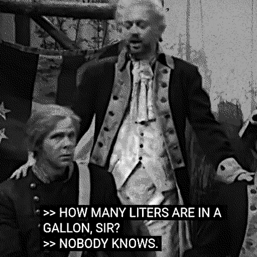
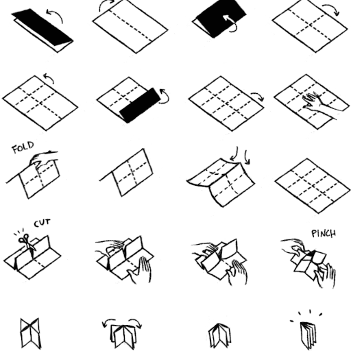
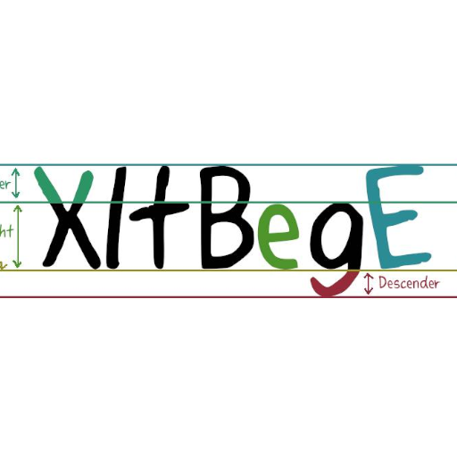
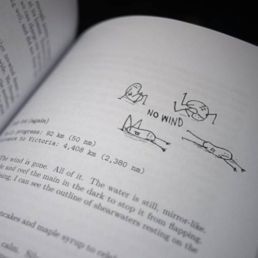
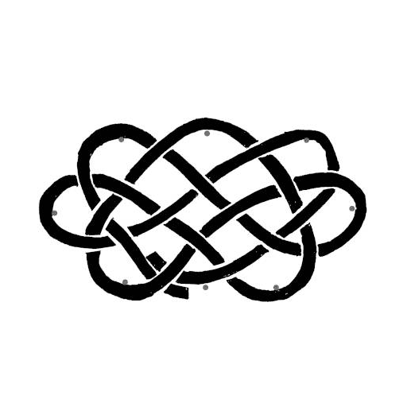
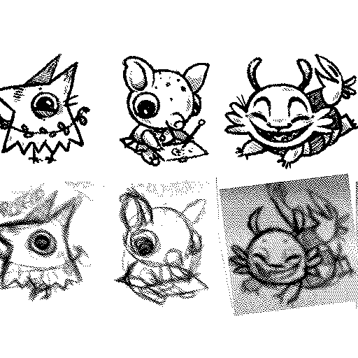

About
About Projects
Projects Games
Games Stories
Stories Store
Store Hobby
Hobby Notes
Notes How-to
How-to- conversion
- folding zine
- a good friction hitch
- image optimization
- leaner web
- making a font
- pandoc
- remove ai
- rope mats
- spellbook
- using a scanner under linux

Conversion
Converting imperial to metric measurements.

Folding a Zine
How to fold a zine.
A Good Friction Hitch
How to make a friction hitch.
Image Optimization
Ways to optimize images for the web.

Leaner Web
Bandwidth conservation society.

Making a Font
Tips on making a digital handwritten font using FontForge.

Pandoc
Using Pandoc to generate a book.

Remove AI
Disabling AI features in many tools.

Rope Mats
How to make a rope rug.

Spellbook
Cheat sheet for terminal commands.

Using a Scanner Under Linux
Making a scanner work in Linux.